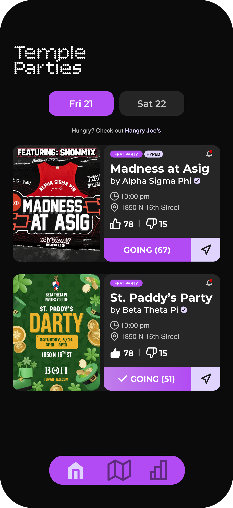

tuparties
Event discovery layer for the heart of college social life.
Students struggle to discover and attend social events on campus.
Information is scattered.
Parties live in private group chats, Snap stories, Instagram, and YikYak. There's no single source of truth for what's happening tonight.
Plans surface last-minute.
Students hear about events the day-of — or after they've already started. By then, they're either too late or already committed elsewhere.
Going alone feels uncomfortable.
Even when the event sounds great, walking in without knowing if anyone is there is uncomfortable — especially for freshmen.
I find out about events last minute by seeing other people go.
What we thought we were building.
Our initial concept was TagAlong — an app for finding people to do things with when you didn't want to go alone.
Things people would do, if only they had company.
- Visit a museum on a Sunday afternoon
- Try a new restaurant in Center City
- See a film at the Ritz
- Catch a show, an exhibit, a one-off event
Then we actually talked to students.
We wanted to solve 5 things at once. Then we decided to just solve 1.
TagAlong
Five different bottlenecks for a behavior people might adopt — discovery, scheduling, trust, social risk, value loop.
tuparties
One simple bottleneck for a behavior students already do every weekend — finding out what's the move tonight.
The Two Users.
Students who go out
Looking for a fun weekend after a hectic week.
- Underclassmen still settling into campus life
- Relies on fragmented information to make plans
- Wants social proof — is anyone else going?
- Cares about the reputation
The Hosts
The fraternities, the house-party throwers.
- Needs distribution beyond their own network.
- Wants to see who's coming.
The idea on paper but not there yet.
Very generic UI. Functional, but ugly. 10+ user feedback told us to rethink.


An usable interface.
This is the design the site launched with. It works but it's still medium ugly.


Proper design system.
V3 kept almost all the functionality and gave the site a proper design system: consistent colors, intentional typography and more.


Let's see it — Home, Map, Rankings, with real data from this week.
tuparties.comWe didn't just run usability tests. We ran the product.
Tuparties launched the first week of February — 3 weeks in. Real users replaced the test lab.
The data confirmed what interviews said — and revealed something we didn't expect.
72% of all traffic happens Thursday through Saturday.
The interview hypothesis — "students go out on weekends" — held up at scale. Saturday is consistently our highest-traffic day, every week.
Of users who tap "going," 76% then tap "get directions."
This was the unexpected one. Users aren't just browsing — they're committing and heading there. The funnel from interest → action is stronger than any signal we got in interviews. Real intent moving users.
Attention turned into revenue.
Removing the human bottleneck.
Until now, every party on the platform was added by hand — hosts texted, we posted. The next iteration removes that friction entirely.
-
01
Profiles
Separate flows for attendees and hosts. Replaces the no-account model that scaled us to 2.5K users but won't scale further. Pre-requisite to a social platform.
-
02
Self-serve party creation
Hosts post their own events. No more middleman, no more delays, no more lost listings.

What we'll do in the fall.
Validate the new flows with usability tests
The auth and party-creation features ship without test data — that's the next round of moderated sessions.
Expand to other campuses
Temple proved that the model is repeatable. Drexel, Penn, and St. Joe's are all within 5 miles.
Design for cross-campus discovery
The hardest interaction model: a Temple sophomore deciding whether to cross town for a Drexel party. New trust, new social signals.